10g (9.0.4)
Part Number B10270-01
Library |
Contents |
Index |
| Oracle Discoverer Administrator Administration Guide (Online Help) 10g (9.0.4) Part Number B10270-01 |
|
This chapter explains how to implement joins using Discoverer Administrator, and contains the following topics:
In Discoverer, a join relates two folders using one or more matching items. In the database, a join relates two tables using matching columns.
For example, consider the two tables DEPT and EMP.
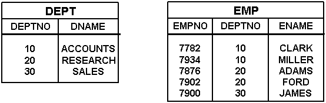
Every department in the DEPT table has a department name and a department number. Every employee in the EMP table has a name and belongs to a department (which is identified by its department number).
To see the name of an employee and the name of the department in which they work, you must extract information from both tables. However, before you can extract information from both tables in the same query, a join must exist between the tables.
To define a join, you typically specify one column in one table that matches a column in the other table. In the case of the DEPT and EMP tables, the DEPTNO column in the DEPT table matches the DEPTNO column in the EMP table. In other words, the values in the DEPTNO column in the DEPT table have matching values in the DEPTNO column in the EMP table.
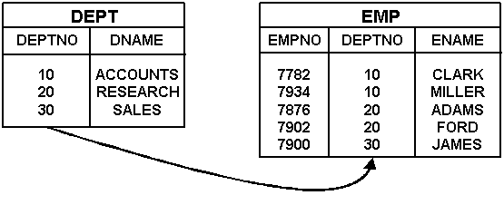
A join typically comprises a master table and a detail table. The master table has one row for which there are many rows in the detail table. In the example above, the DEPT table is the master table and the EMP table is the detail table because each department can have many employees.
The matching column in the detail table is often referred to as the foreign key column.
When you create a join using Discoverer Administrator, you specify a join condition that identifies the item in the master folder and the matching item in the detail folder. It is important to make sure you:
Having defined a join between two folders:
In Discoverer, a single item join relates two folders by specifying an item that is common to both folders in a join condition. A join condition is the combination of two join items related by a join operator. Typically, the join operator is the equals (=) sign and the join is therefore referred to as an equi-join (for more information about alternative join operators, see "What are non-equi-joins?").
For example, the schema below uses the common column DEPTNO to join the DEPT and EMP tables.
Every department in the DEPT table has a department name and a department number. Every employee in the EMP table has a name and belongs to a department (which is identified by its department number). To see the name of an employee and the name of the department in which they work, you need information from both the EMP table and the DEPT table.
Imagine that a Discoverer end user wants to see the name of every employee and the name of the department in which they work, as follows:
| DNAME | ENAME |
|---|---|
|
ACCOUNTS |
CLARK |
|
ACCOUNTS |
MILLER |
|
RESEARCH |
ADAMS |
|
RESEARCH |
FORD |
|
SALES |
JAMES |
In other words, DEPT.DNAME and EMP.ENAME.
The following SQL statement would achieve the required result:
select dname, ename from dept, emp where dept.deptno=emp.deptno
To enable the Discoverer end user to see the required result, you can do either of the following:
Having defined the join:
In Discoverer, a multi-item join relates two folders using more than one join condition, such that the join becomes true when all of the join conditions are met (for more information about join conditions, see "What are single item joins?").
For example, the schema below uses a combination of COUNTRY_CODE and PRODUCT_CODE to uniquely identify products.
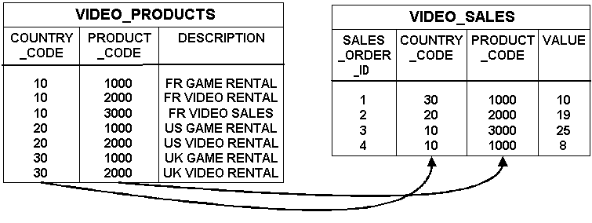
Every product in the VIDEO_PRODUCTS table has a description and is uniquely identified by the combination of a country code and a product code (note that product codes are only unique within each country code). Every sale in the VIDEO_SALES table is of a particular product (which is identified by its country code and product code). To see the value of a sale and a description of the product that was sold, you need information from both the VIDEO_SALES table and the VIDEO_PRODUCTS table.
Imagine that a Discoverer end user wants to see the value of each sale and a description of the product that was sold, as follows:
| Description | Value |
|---|---|
|
UK GAME RENTAL |
10 |
|
US VIDEO RENTAL |
19 |
|
FR VIDEO SALES |
25 |
|
FR GAME RENTAL |
8 |
In other words, VIDEO_PRODUCTS.DESCRIPTION and VIDEO_SALES.VALUE.
The following SQL statement would achieve the required result:
select description, value from video_products, video_sales where video_products.country_code=video_sales.country_code and video_products.product_code=video_sales.product_code
To enable the Discoverer end user to see the required result, you can do either of the following:
Having defined the multi-item join:
Note: A join that uses more than one column in each table to uniquely identify a row is also referred to as a composite join key.
To join more than two folders in Discoverer, you must define a separate join between each of the folders you want to join.
For example, the schema below uses two joins to relate three tables. One join relates the VIDEO_SALES_ORDERS table with the SALES_ORDER_LINE_ITEMS table and the other join relates the VIDEO_PRODUCTS table with the SALES_ORDER_LINE_ITEMS table.
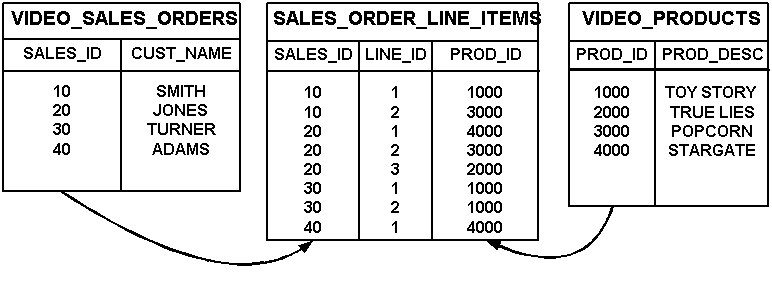
Every sales order in the VIDEO_SALES_ORDERS table is for a particular customer (and is uniquely identified by a sales id). As shown in the SALES_ORDER_LINE_ITEMS table, every sales order comprises one or more line items and each line item is for a particular product. Every product in the VIDEO_PRODUCTS table has a description (and is uniquely identified by a product id).
Imagine that a Discoverer end user wants to see the customer's name and a description of what they have been buying, as follows.
| Customer name | Product description |
|---|---|
|
TURNER |
TOY STORY |
|
TURNER |
TOY STORY |
|
JONES |
STARGATE |
|
JONES |
POPCORN |
|
JONES |
TRUE LIES |
|
SMITH |
POPCORN |
|
SMITH |
TOY STORY |
|
ADAMS |
STARGATE |
In other words, VIDEO_SALES_ORDERS.CUST_NAME and VIDEO_PRODUCTS.PROD_DESC.
The following SQL statement would achieve the required result:
select cust_name, prod_desc from video_sales_orders, sales_order_line_items, video_products where video_sales_orders.sales_id=sales_order_line_items.sales_id and sales_order_line_items.prod_id=video_products.prod_id
To enable the Discoverer end user to see the required result, you can do either of the following:
Having defined two separate joins:
In Discoverer, a non-equi-join enables you to join two folders where there is no direct correspondence between columns in the tables. A non-equi-join relates two folders using one or more join conditions that use non-equi-join operators.
For example, the schema below uses a non-equi-join to join the EMP and SALGRADE tables because there are no matching columns in the two tables.
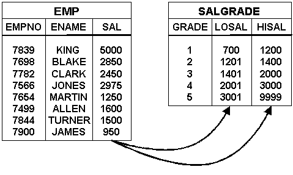
An employee's grade depends on their salary. Employees earning between 700 and 1200 are in grade 1, those earning between 1201 and 1400 are in grade 2, and so on.
Imagine that a Discoverer end user wants to see the grade of each employee, as follows:
| ENAME | GRADE |
|---|---|
|
KING |
5 |
|
BLAKE |
4 |
|
CLARK |
4 |
|
JONES |
4 |
|
MARTIN |
2 |
|
ALLEN |
3 |
|
TURNER |
3 |
|
JAMES |
1 |
In other words, EMP.ENAME and SALGRADE.GRADE.
The following SQL statement would achieve the required result:
select ename, grade from emp, salgrade where emp.sal>=salgrade.losal and emp.sal<=salgrade.hisal
To enable the Discoverer end user to see the required result, you can do either of the following:
Having defined the join:
One-to-many joins are the most common type of join. With a one-to-many join, one row in the master folder is joined to multiple rows in the detail folder.
One-to-one joins are joins between two folders where both items used in the join are primary keys. Therefore only one row in one folder will join to only one (or no) rows in the other folder. There is no real master and detail in this case, because each row in the master table can correspond to no more than one row in the detail table. Occasionally, one-to-one joins are a valid construct. Discoverer enables you to specify that a join is a one-to-one join.
It is possible to query a master folder with multiple detail folders, provided that all but one of the detail folders are joined with one-to-one joins. If more than two detail folders are joined to the master folder using one-to-many joins (also known as a fan trap schema), a row in the master folder might join to many rows in the detail tables, resulting in a Cartesian product. Fan trap schemas are resolved in Discoverer to prevent them returning unexpected results. For more information, see "What are fan traps, and how does Discoverer handle them?".
Many-to-many joins are not supported directly in Discoverer (or in any relational system). However, many-to-many joins can always be reworked and transformed into multiple one-to-many joins. Very occasionally, a many-to-many join is a valid construct.
You might want to join two folders using more than one joinwhen creating a complex folder. For example, you might create a number of complex folders that contain the same items, but each complex folder uses one or more joins. Each one of these joins can be defined using different join options.
The following table illustrates how you can join two folders (e.g. emp and dept) using four different joins. You can choose one or more of these joins when adding items to complex folders.
When you create a complex folder and drag items from two folders that have more than one join between the two folders, Discoverer Administrator displays the Choose Joins dialog where you can choose one or more joins to use.
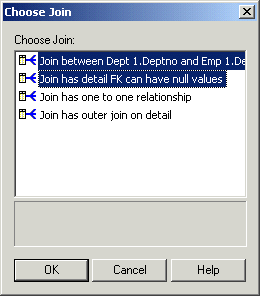
For more information, see "How to create complex folders".
When Discoverer Plus or Discoverer Desktop users create worksheets using items from multiple folders, if end users choose items from two folders joined using more than one join, Discoverer does one of the following:
This occurs if you select the Disable multiple join path detection option in Discoverer Plus or Discoverer Desktop.
This occurs if you clear the Disable multiple join path detection option in Discoverer Plus or Discoverer Desktop.
For more information, see the Oracle Application Server Discoverer Plus User's Guide.
In some circumstances, you will always want Discoverer to use a join when querying a master folder and a detail folder. For example:
Resolving joins is relatively time-consuming, so returning results from such a query might be relatively slow.
In other circumstances, it will not be necessary for Discoverer to query the master folder as well as the detail folder. For example:
If you set the appropriate option to indicate that Discoverer does not need to query the master folder, query performance will improve. However, be aware that not querying the master table might give you unexpected results. If you are not sure whether to include the master folder, see "Examples of how joins can affect query results from complex folders".
If you combine two or more folders in a complex folder (i.e. using a join), Discoverer can improve query performance by detecting and removing joins that are not required (a process known as join trimming). If the SQLJoinTrim Discoverer registry setting is enabled (i.e. if it is set to the default value of 1), Discoverer will remove joins from a query when both of the following conditions are met:
For more information about Discoverer registry settings, see "What are Discoverer registry settings?".
Discoverer will never use a summary folder to satisfy a query that uses a join with the Detail item values might not exist in master folder option selected (for more information, see the "Join Wizard: Step 2 dialog").
The examples below assume that you have used Discoverer Administrator to create a complex folder called Emp_and_Dept. The complex folder is based on the DEPT and EMP tables with the join condition DEPT.DEPTNO=EMP.DEPTNO.
Consider the following two scenarios:
In Scenario One, employees in the EMP table must always belong to one of the departments in the DEPT table:
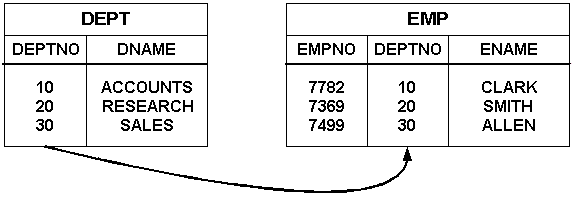
This scenario illustrates a schema in which a query on ENAME produces the same results, regardless of whether you include the master folder in the query.
In Scenario Two, employees in the EMP table need not belong to a department in the DEPT table, as follows:
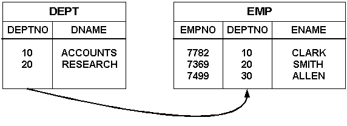
This scenario illustrates a schema in which a query on ENAME might produce different results, depending on whether you include the master folder in the query.
You will want to exclude the master folder from a query when including the master folder will either make no difference to the results, or when including the master folder will not return the required results.
Note: Excluding the master folder from a query (that uses only items from a complex folder), means that Discoverer Plus or Discoverer Desktop does not use the join between the master and detail folder. Discoverer does not use the join when you select query items from a complex folder (when creating a worksheet in Discoverer Plus or Discoverer Desktop), and the query items come only from the detail folder (e.g. EMP).
Imagine that a Discoverer end user wants to see the name of all the employees in the EMP table by selecting the ENAME item from the Emp_and_Dept complex folder.
In Scenario One, the required results are as follows:
| ENAME |
|---|
|
CLARK |
|
SMITH |
|
ALLEN |
Including the master folder in the query will make no difference to the results because all of the employees will be returned by the query. To improve query performance, you can specify that Discoverer does not query the master folder by selecting the Detail items always exist in the master folder option in the "Join Wizard: Step 2 dialog". Providing that the SQLJoinTrim Discoverer registry setting is also enabled, Discoverer will not query the master folder (for more information, see "What are Discoverer registry settings?").
In Scenario Two, the required results are as follows:
| ENAME |
|---|
|
CLARK |
|
SMITH |
|
ALLEN |
Including the master folder in the query will only return those employees with department numbers that match department numbers in the DEPT table. But the Discoverer end user wants to see all employees in the EMP table. To return all the employees in the EMP table, you can specify that Discoverer does not query the master folder by selecting the Detail items always exist in the master folder option in the "Join Wizard: Step 2 dialog". Providing that the SQLJoinTrim Discoverer registry setting is also enabled, Discoverer will not query the master folder (for more information, see "What are Discoverer registry settings?").
You will want to include the master folder in a query when excluding the master folder will not return the required results from the detail table.
Note: Including the master folder in a query (that uses only items from a complex folder), means that Discoverer Plus or Discoverer Desktop uses the join between the master and detail folder. Discoverer uses a join when you select query items from a complex folder (when creating a worksheet in Discoverer Plus or Discoverer Desktop), and the query items come from either the master or the detail folder (e.g. DEPT and EMP respectively).
Imagine that a Discoverer end user wants to see the current employees in the EMP table by selecting the ENAME item from the Emp_and_Dept complex folder. Any employees that belong to departments that are not in the DEPT table are not current employees, and are therefore not required.
In Scenario One, the required results are as follows:
| ENAME |
|---|
|
CLARK |
|
SMITH |
|
ALLEN |
Including the master folder in the query will make no difference to the results because all of the employees belong to a department. To improve query performance, you can specify that Discoverer does not query the master folder by selecting the Detail item values always exist in the master folder option in the "Join Wizard: Step 2 dialog". Providing that the SQLJoinTrim Discoverer registry setting is also enabled, Discoverer will not query the master folder (for more information, see "What are Discoverer registry settings?").
In Scenario Two, the required results are as follows:
| ENAME |
|---|
|
CLARK |
|
SMITH |
Including the master folder in the query will only return those employees with department numbers that match department numbers in the DEPT table, which is exactly what the Discoverer end user wants. You can specify that Discoverer always queries the master folder by selecting the Detail item values might not exist in the master folder option in the "Join Wizard: Step 2 dialog".
You will always want to include the master folder in a query if you want the results to contain information from both the master folder and the detail folder.
Note: Including the master folder in a query (that uses only items from a complex folder), means that Discoverer Plus or Discoverer Desktop uses the join between the master and detail folder. Discoverer uses a join when you select query items from a complex folder (when creating a worksheet in Discoverer Plus or Discoverer Desktop), and the query items come from either the master folder or the detail folder or from both folders (e.g. DEPT and EMP).
Imagine that a Discoverer end user wants to see employees and the departments to which those employees belong by selecting the ENAME item and the DNAME item from the Emp_and_Dept complex folder.
In Scenario One, the required results are as follows:
| ENAME | DNAME |
|---|---|
|
CLARK |
ACCOUNTS |
|
SMITH |
RESEARCH |
|
ALLEN |
SALES |
Including the master folder in the query is essential to return the names of the departments. Discoverer will include the master folder in the query even if you have selected the Detail item values always exist in the master folder option in the "Join Wizard: Step 2 dialog".
In Scenario Two, the required results are as follows:
| ENAME | DNAME |
|---|---|
|
CLARK |
ACCOUNTS |
|
SMITH |
RESEARCH |
Including the master folder in the query is essential to return the names of the departments. Discoverer will include the master folder in the query even if you have selected the Detail item values always exist in the master folder option in the "Join Wizard: Step 2 dialog".
Note that Allen will only be returned (with a null value for the department name) if you select the Outer join on master option in the "Join Wizard: Step 2 dialog" (for more information, see "What are outer joins?").
Outer joins are SQL constructs that enable you to return rows from one table when there are no matching rows in a table to which it is joined.
Consider the following scenario:
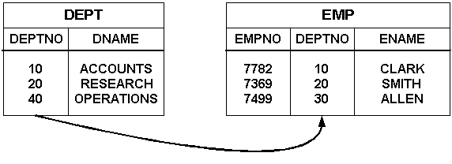
The following examples use the schema in the above figure to illustrate how the position of the outer join determines the rows returned from a query.
Imagine that a Discoverer end user wants to see all employee records, even when an employee does not belong to a department. The required results are as follows:
| DNAME | ENAME |
|---|---|
|
ACCOUNTS |
CLARK |
|
RESEARCH |
SMITH |
|
<NULL> |
ALLEN |
The following SQL statement would achieve the required result:
select dname, ename from dept, emp where dept.deptno(+)=emp.deptno
When the outer join is placed on the master table, the database returns each detail row for which there is no matching master row (as well as all matching detail and master rows). In the SQL statement, the plus (+) symbol signifies the outer join.
To enable the Discoverer end user to see the required result, you can do either of the following:
Having defined the join:
Imagine that a Discoverer end user wants to see all department records even when a department does not have any employees. The required results are as follows:
| DNAME | ENAME |
|---|---|
|
ACCOUNTS |
CLARK |
|
RESEARCH |
SMITH |
|
OPERATIONS |
<NULL> |
The following SQL statement would achieve the required result:
select dname, ename from dept, emp where dept.deptno=emp.deptno(+)
When the outer join is placed on the detail table, the database returns each master row for which there is no matching detail row (as well as all matching master and detail rows). In the SQL statement, the plus (+) symbol signifies the outer join.
To enable the Discoverer end user to see the required result, you can do either of the following:
Having defined the join:
You create a join to enable end users to include items from different folders in the same worksheet.
To create a join:
Hint: For more information about which is the master and detail folder, see "What are joins?".
The master item is displayed in the Master Items field.
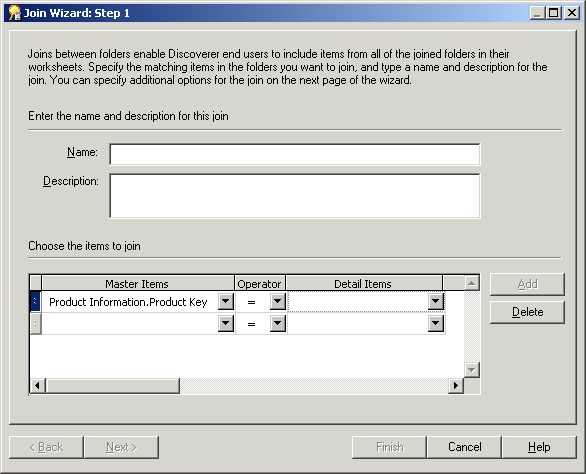
Hint: If you want to change the folder and item in the Master Items field, choose the More items option at the bottom of the drop down list.
You can choose a detail item from a folder in the same business area or in any other open business area.
By specifying a master item, a detail item, and a join operator, you have created a join condition. Joins that have only one join condition are referred to as single-item joins (for more information, see "What are single item joins?").
Hint: If you want to change the folder and item in the Detail Items field, choose the More items option at the bottom of the drop down list.
In some circumstances, you will need to create more than one join condition (for more information, see "What are multi-item joins?").
Note: If you specify a master or detail item from a folder that was not included in the previous join condition, the previous join condition is removed.
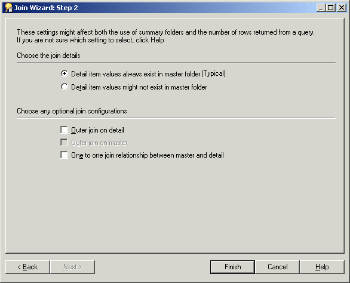
Select this radio button to improve query performance (for more information, see "What effect do joins have on query results and query performance?").
Select this radio button if you cannot be sure that all the values in the detail folder have matching values in the master folder. Note that selecting this option might return unexpected results (for more information, see "What effect do joins have on query results and query performance?").
Select this check box to display master rows that have no corresponding detail items, as well as all matching master and detail rows.
Select this check box to display detail rows that have no corresponding master, as well as all matching detail and master rows. This check box is only available if the Detail item values might not exist in the master folder option is selected.
Select this check box to specify that there is a one to one relationship between master and detail tables.
Note: Clear this check box if you are creating an outer join.
For more information about the above options, see:
Discoverer Administrator creates the join between the two folders. The join icon is shown below both folders in the Workarea.
You can view or edit a join using either or both of the following methods:
Both methods are described below.
To edit a join using the Edit Join dialog:
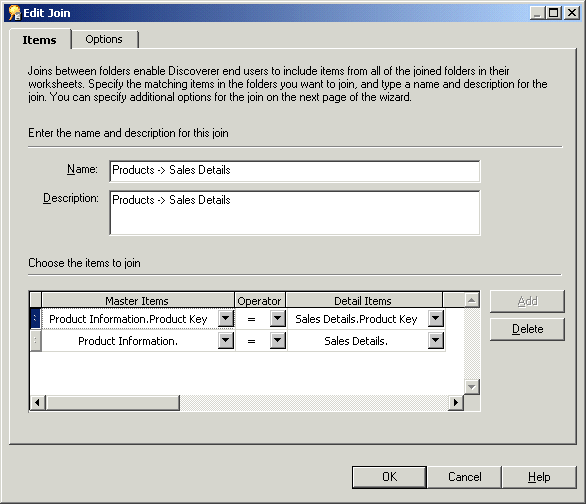
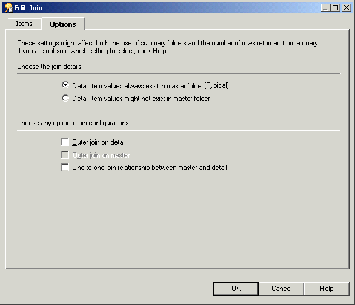
To view or edit join properties using the Join Properties dialog:
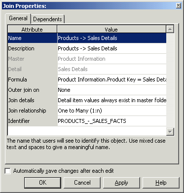
Hint: You can select more than one join at a time by holding down the Ctrl key and clicking another join. All properties that are common to each selected join are displayed. If the value of a property is not common to all of the selected joins, the Value field is blank.
You might delete a join when it is no longer required. For example, you might want to prevent end users creating a worksheet that contains items from two previously joined folders.
Note: When you delete a join, other EUL objects (e.g. complex folders) that use the join might also be affected. It is recommended that you export the EUL before you attempt to delete a join.
To delete a join:
Hint: You can select more than one join at a time by holding down the Ctrl key and clicking another join.

The Impact dialog enables you to review the other EUL objects that might be affected when you delete a join.
Note: The Impact dialog does not show the impact on workbooks saved to the file system (i.e. in .dis files).
A fan trap is a group of joined database tables that might return unexpected results. The most common manifestation of a fan trap occurs when a master table is joined to two or more detail tables independently.
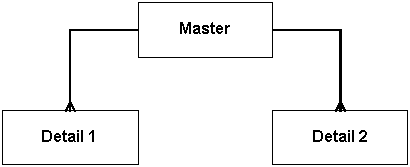
Although this construction is relationally correct, you are likely to return incorrect results if you use a straightforward SQL statement to aggregate data points.
However, if you use Discoverer to aggregate the data points, Discoverer will never return incorrect results. Every query that Discoverer generates is interrogated for potential fan traps. If a fan trap is detected, Discoverer can usually rewrite the query using inline views to ensure the aggregation is done at the correct level. Discoverer creates an inline view for each master-detail aggregation, and then combines the results of the outer query.
For an example of how Discoverer will return correct results when a straightforward SQL statement will return incorrect results, see "Example of a fan trap".
In some circumstances, Discoverer will detect a query that involves an unresolvable fan trap schema, as follows:
In the above circumstances, Discoverer disallows the query and displays an error message.
In addition, Discoverer controls which columns can be totalled. If a worksheet displays values of items from both the master folder and the detail folder, Discoverer will not total the values together. Instead, Discoverer will display a null to prevent incorrect or unexpected results.
For more information about enabling or disabling fan trap detection in Discoverer, see the Oracle Application Server Discoverer Plus User's Guide.
Consider an example fan trap schema that includes a master folder (ACCOUNT) and two detail folders (SALES and BUDGET), as shown below:
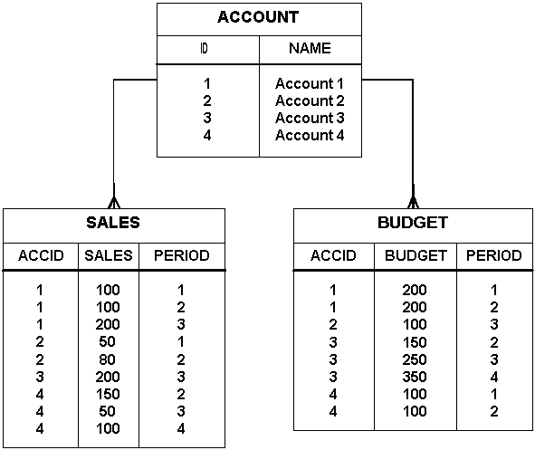
Every account can have several sales figures and several budget figures for each period.
Imagine that a Discoverer end user wants to answer the question, "What is the total sales and total budget by account?". The aggregates (SUM) from the two detail tables come from the same master table (ACCOUNT).
This relatively simply query will produce:
To answer the question, "What is the total sales and total budget by account?", Discoverer:
Discoverer returns correct results, as shown below:
| Account | Sales | Budget |
|---|---|---|
|
Account 1 |
400 |
400 |
|
Account 2 |
130 |
100 |
|
Account 3 |
200 |
750 |
|
Account 4 |
300 |
200 |
Discoverer interrogates the query, detects a fan trap, and rewrites the query to ensure the aggregation is done at the correct level. Discoverer rewrites the query using inline views, one for each master-detail aggregation, and then combines the results of the outer query.
The following example shows the SQL that Discoverer uses to return the correct results:
SELECT inACC as Name, SUM(inSalesSum) as SALES_SUM, ,SUM(inBudgetSum) as BUDGET_ _SUM, FROM(SELECT masterID AS OutMasterIDSales, SUM(SalesDetailsSales) AS inSalesSum FROM (SELECT ID AS masterID, NAME AS masterName FROM ACCOUNT) INLineAccount, (SELECT ID AS SalesDetailId, ACCID AS SalesDetailAccID, SALES AS SalesDetailsSales FROM SALES )INLineSalesWHERE(masterID = SalesDetailAccID(+)) GROUP BY masterID) inner1, (SELECT masterID AS OutMasterIDBudget, SUM(BudgetDetailBudget) AS inBudgetSum, masterName AS inACC FROM(SELECT ID AS masterID, NAME AS masterName FROM ACCOUNT) INLineAccount, (SELECT ID AS BudgetDetailId, ACCID AS BudgetDetailAccID, BUDGET AS BudgetDetailsSales FROM BUDGET )INLineBudgetWHERE(masterID = BudgetDetailAccID(+)) GROUP BY masterName, masterID ) inner2 WHERE ((OutMasterIDBudget = OutMasterIDSales)) GROUP BY inACC
The result is correct because each sale and each budget is summed individually (one for each master-detail aggregation) and is then combined with a join based on the master key(s).
To answer the question, "What is the total sales and total budget by account?", you might consider using a staightforward SQL statement such as the following:
SELECT Account.Name, SUM(sales), SUM(budget) FROM Account, Sales, Budget Where Account.id=Sales.accid AND Account.id=Budget.accid GROUP BY Account.Name
This straightforward SQL statement returns incorrect results, as shown below:
| Account | Sales | Budget |
|---|---|---|
|
Account 1 |
800 |
1200 |
|
Account 2 |
130 |
200 |
|
Account 3 |
600 |
750 |
|
Account 4 |
600 |
600 |
Although the results are relationally correct, they are obviously wrong. For example, the results indicate that the total sales figure for Account 1 is 800 but you can see from the SALES table that the total sales figure for Account 1 is 400 (i.e. 100+100+200).
The incorrect results are based on a single query in which the tables are first joined together in a temporary table, and then the aggregation is performed. However, this approach causes the aggregates to be summed (incorrectly) multiple times.
Discoverer warns about fan trap join configurations in complex folders by displaying a message indicating that an invalid join configuration exists. To make sure that Discoverer returns correct results for complex folders, you can edit the Formula property of the detail item and explicitly specify the aggregate formula.
For example, you might set the Formula property of a Sales item in a complex folder, from Sales Fact.Sales to SUM(Sales Facts.Sales), as shown below:
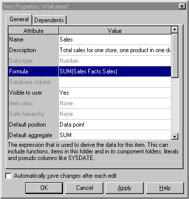
Discoverer does not allow joins between items of different data types (e.g. varchar, numeric, or date). However, if you have upgraded from a previous version of Discoverer, an existing join might already exist between mismatched data types. If a join exists between two items with mismatched data types, Discoverer runs the query but displays an error message and does not complete the query. Discoverer also displays an error message if you try to edit a join that contains items that have mismatched data types.
You can create a join between two items that have mismatched data types by following the steps below:
For more information, see "Example of how to create a join between two items that have mismatched data types".
In this example, you want to create a join between the Calendar Date folder and the Store and Sales Detail folder, using:
These two items have mismatched data types, as follows:
To create a join between the two folders using these two items, you must perform the following steps:
The first step is to create a new item that converts the Day of Week item from varchar to a date data type as follows:
New Day of Week in the Item Name field.
Day of Week,Day
The Calculation field now displays the following text:
TO_DATE(Day of Week,Day)
You have now created a new item that is based on the Day of Week (varchar) item and that has been converted to a date data type.
Having created a new calculated item of the correct data type, the next step is to join the new item to the Transaction Date item from the Store and Sales Details folder, as follows:
The New Join dialog enables you to select the detail folder and item for the new join.
Discoverer is able to join the Calendar Date folder with the Store and Sales Details folder using the New Day of Week item and the Transaction Date item because both items have the same data type.
|
|
 Copyright © 2003 Oracle Corporation. All Rights Reserved. |
|